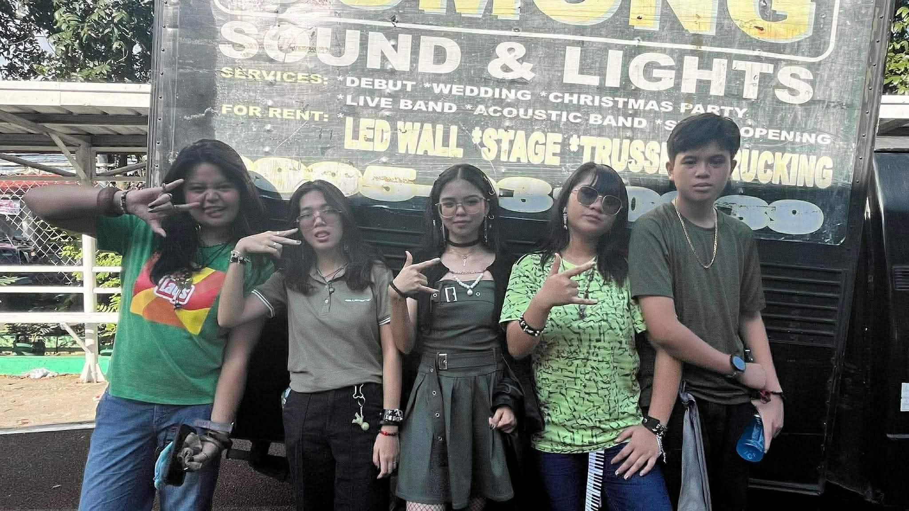
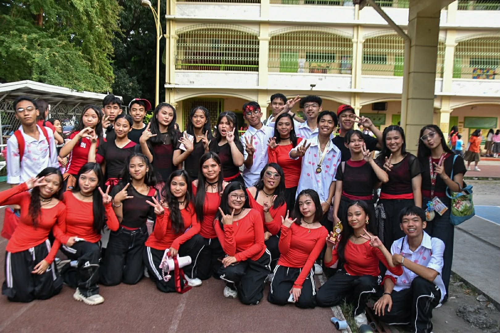

I learned that hyperlinks allow us to connect one webpage to another. They help users navigate easily through different pages of a website. This lesson showed me its parts, states, types, and how to make them.
This lesson taught me how to create links that open an email directly to a specific address. I also learned how to link my webpage to pages on other websites. It helped me understand how websites can connect and communicate with people more easily.
I learned that HTML links are created using the anchor tag and a URL. They allow users to click text or images to go to another page. This lesson helped me understand the basic structure of linking in HTML.
This lesson introduced different types of input fields used in forms. I learned that input type tags help collect different kinds of user information like text, numbers, or emails. It made me realize how forms can be customized depending on the data needed.
I learned that the input element is used to create fields where users can enter information. It is an important part of forms because it allows interaction between the user and the website. This lesson helped me understand how websites gather data from visitors.
This lesson taught me how radio buttons allow users to choose only one option from a group. They are useful when a question requires a single answer. I learned how they help make forms clearer and more organized.
I learned how to create a form that allows users to send feedback through email. This makes it easier for website visitors to share their opinions or suggestions. This lesson helped me understand how forms can be used to communicate with users and improve a website.
࣪ ˖ ⟡˚౨ৎ⋆ TLE/ICT ~ 2nd Quarter ⋆౨ৎ˚⟡˖ ࣪
♡ .✦Q2L1✦. ♡
In this lesson, I have been introduced to the Cascading Style Sheets or CSS. Here I learned its structure, benefits, and capabilities. CSS describes how elements are displayed on different forms of media, separating content from deisgn making it organized with aesthetics.
♡ .✦Q2L2✦. ♡
This lesson taught me the structure of CSS as well as its types or kinds. Its structure consists of a selector, property, value, and declaration. The kinds of CSS are inline, external, and embedded. This lesson also tackled about style sheets and how it functions.
♡ .✦Q2L3✦. ♡
For this topic, I learned about display properties, its kinds and importance. I also learned about the < div > and < span > tags along with its attribute.
♡ .✦Q2L4✦. ♡
This topic discusses about CSS rules, style properties, classes, and class selectors. Here, I learned how to format the different kinds of CSS and how to apply a style rule to specific HTML tags.
♡ .✦Lesson-5✦. ♡
This lesson focuses on CSS selectors and when to use it. I learned that the different type of selectors are Class selector, Element selector or Tag selector, ID selector, Universal selector, Group selector, and Attribute selector.
♡ .✦Lesson-6✦. ♡
This lesson talks about setting dimensions, pseudo class and links, and their properties. In setting dimensions, I learned that the dimensions CSS manages are visibility, width or height of HTML elements. In pseudo-classes and links, I learned that the anchor element has 4 pseudo-classes being link, visited, hover and active.
── .✦ Buwan ng Wika ✦. ──
This Buwan ng Wika reminded me of the importance of appreciating my culture. I can apply what I learned by speaking Filipino more often and by supporting events that promote our culture. I actively participated in this month by wearing our cultural attire every monday of the month. If I were to teach this topic to a classmate, I would explain that Buwan ng Wika is about honoring the Filipino cultures and traditions and keeping it alive. It is important to have this event because it strengthens our love for our country and reminds us of our identity as Filipinos.
── .✦ Intramurals ✦. ──
The most important thing I learned is the value of teamwork, unity, and good sportmanship. I can apply this by cooperating with others in school activities and by maintaining a positive attitude when things go unexpected .I actively participated by joining tug-o-war and the sack race and by watching almost every game to show my support. If I were to teach this topic, I’d explain that the intramurals teaches discipline, respect, and teamwork through sports. It’s important to have this event because it builds friendship, school spirit, and healthy competition.
── .✦ Science Month ✦. ──
This Science month, I learned is that science is not just about facts but about discovering and solving problems. I can apply this by being curious and observing how Science works around me. To be honest, I did not actively participate during this Science month. If I were to teach this topic to someone I know, I would explain that Science month helps us appreciate how Science improves our world. This event is important because it encourages students to think critically and develop problem-solving skills.
── .✦ AP Month ✦. ──
The most important thing I learned is to respect our history and learn from it. I can apply this by being aware of current issues and acting responsibly as a citizen. If I will be honest, I did not participate actively this AP month. If I were to teach this topic, I would explain that AP Month reminds us of our roots and teaches us to value our culture. It’s important to have this event because it builds nationalism and helps students understand their role in society.
── .✦ Teacher's Day ✦. ──
Teacher’s Day was a wonderful day of celebrating and showing our appreciation to our hard-working and caring teachers. It reminded to always appreciate them because of how much effort they give to teach and guide us every day. I can apply what I learned by always respecting my teachers. I participated actively this teacher's day by helping my classmates make gifts for our teachers. If I were to teach someone about this topic, I would explain that teacher’s day celebrates the people who helps us shape our knowledge and character. It’s important to have this event because teachers deserve recognition for their sacrifices and hard work.
── .✦ Cluster Meet ✦. ──
The Cluster Meet was an exciting event where students from different schools gathered to compete and showcase their talents. It was wonderful to see everyone give their best while portraying sportsmanship and unity. I felt proud to see my classmates and school mates represent our school and cheer for them. Similar to the intramurals, this experience reminded me of the importance of good sportmanship. This event has truly strengthened our bond as a school once again.
𐙚⋆ Lesson 1 & 1A ⋆𐙚
This lesson taught me how CSS can change the appearance of text on a webpage. I learned how to adjust font style, size, and color to make the text more readable and visually appealing. It helped me understand how typography plays an important role in the overall design of a website.
𐙚⋆ Lesson 2 & 2A ⋆𐙚
In this lesson, I learned how to style text and add borders using CSS. Borders can help highlight sections and make content look more organized. This showed me how small design changes can improve the look of a webpage.
𐙚⋆ Lesson 3 & 3A ⋆𐙚
This lesson helped me understand how CSS can control the layout of elements on a webpage. I learned how to arrange content so that it looks neat and properly spaced. It made me realize that layout formatting is important for creating a clean and user-friendly design.
𐙚⋆Lesson 4 ⋆𐙚
In this lesson, I learned how to style tables and borders using CSS. This helps make tables clearer and easier to read. It showed me how formatting can make information look more organized and professional.
Participating in the V-POP performance helped me appreciate teamwork and creativity. Preparing the song and dance with my section allowed us to express our energy and unity. It was a fun experience that helped us build confidence while performing together.
⋆˙⟡ Math Idol ⟡˙⋆
Math Idol gave us the opportunity to showcase our musical talents as a band. It was exciting to perform in front of others and share our passion for music. This experience helped me realize the importance of practice, coordination, and confidence in performing.
⋆˙⟡ MVP ⟡˙⋆
Though I did not participate in this activity, The MVP event allowed others to creatively present different values through fashion and presentation. It helped me understand how important values are in shaping our character and actions. This event encouraged us to express ourselves while also reflecting meaningful messages.
This lesson introduced me to JavaScript and how it makes websites more interactive. I learned that it can control actions like responding to clicks or displaying messages. It helped me understand how websites can become more dynamic and engaging for users.
In this lesson, I learned the basic rules and proper ways of writing JavaScript code. Following these guidelines helps make the code easier to read and less likely to have errors. It showed me the importance of writing organized and clear code when programming.
This lesson taught me about the main features of JavaScript as a programming language. I learned that it is used to create interactive elements and can run directly in a web browser. It helped me understand why JavaScript is widely used in web development.
This lesson helped me understand different JavaScript elements that control how a webpage responds to users. I learned how event triggers start actions, while variables, comparison statements, and logical operators help control decisions in the code. It made me realize how these parts work together to create interactive website features.
Throughout the practices and lectures for this play, I'll always smile looking back at it. This performance meant so much to us, and after everything we've been through for it, it was definitely worth it. The laughter, tears, joy, and struggles will always be one big memory kept in my heart. This play has greatly reminded me the importance of perseverance, creativity, and cooperation in order to create an output as wonderful as this.
⋆˙⟡ Battle of the Bands (BOTB) ⟡˙⋆

This year's BOTB was truly an unforgetful experience, from the audition recordings and non-stop practices to an amazing performance. I will never forget the joy and laughter from each practice and the new friends I made as well. I learned the importance of passion and cooperation while playing, and to have fun while jamming instead of focusing soley on perfection.
⋆˙⟡ Street Dance ⟡˙⋆

I may not have participated in this event, but I really enjoyed it. This event, my eyes were reopened to the beauty and creativity of dancing. I learned that to achieve outstanding performances such as these, cooperation, perseverance, and patience are truly essential.
Credits for Videos & Pictures:
- Jade S. Imperial
- Tita Jeanette